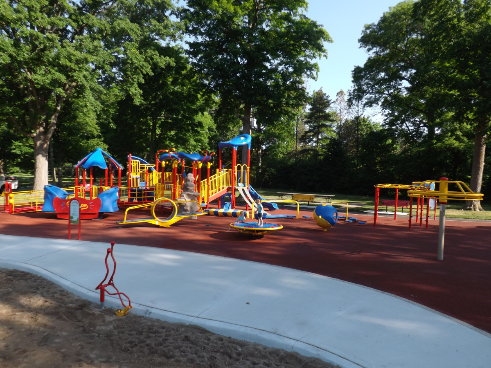

The City of London offers high quality parks, recreation programs, sport services, and facilities that engage residents of all ages and abilities. We are undertaking a study to ensure that our services continue to respond to the community, now and into the future.
The Parks and Recreation Master Plan provides an overall vision and direction for making decisions. The Master Plan is a living document that is based on public input, participation trends, utilization levels, best practices, demographic changes, and growth forecasts. It will guide the City’s investment in parks, recreation programs, sport services, and facilities over the next ten years and beyond.
A Vision for Parks and Recreation
In London, all residents – regardless of age, ability, culture, gender, income, or where they live – have opportunity to participate and share in meaningful and accessible parks, recreation, and sport experiences.
In 2018, the City collected surveys and input from over 2,300 London residents and stakeholders. Based on this input, as well as extensive background research, recommendations were developed. The recommendations are organized into 5 categories which correspond to the Framework for Recreation in Canada:
Community feedback on the Draft Goals, Strategic Directions, and Recommendations has now closed. The final Draft Parks and Recreation Master Plan, along with a summary of the community feedback, is being prepared and will be presented to the Community and Protective Services Advisory Committee on June 17, 2019.